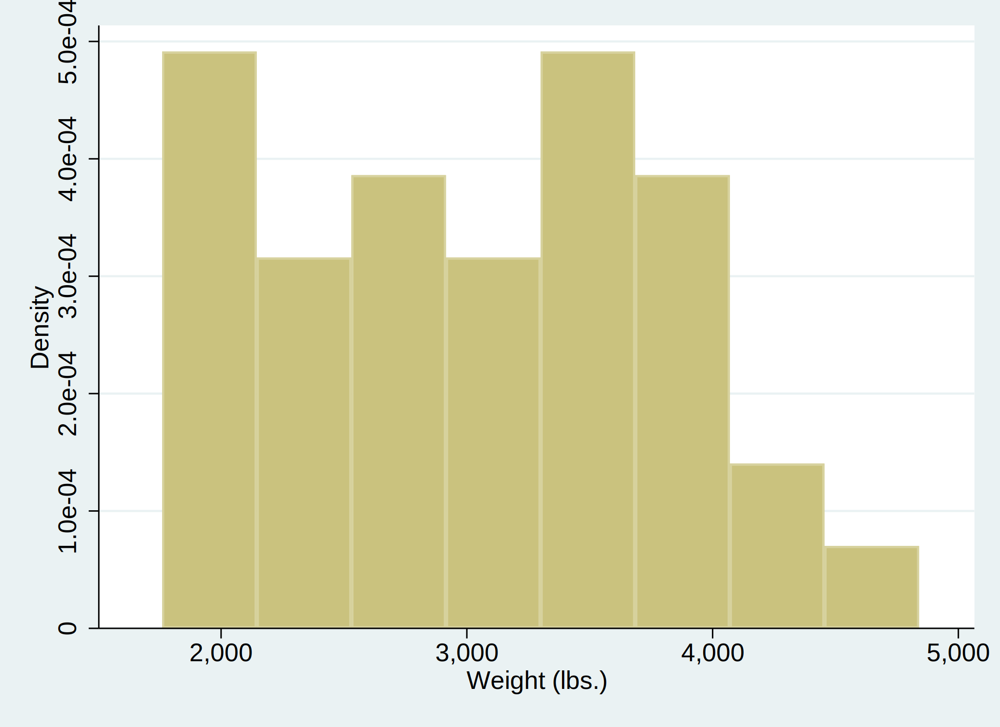

Some preliminary text.
A code block, evaluted:
. sysuse auto
(1978 Automobile Data)
. summarize weight
Variable | Obs Mean Std. Dev. Min Max
-------------+---------------------------------------------------------
weight | 74 3019.459 777.1936 1760 4840
In-line text: 3 Jul 2018
A graph:
. histogram weight
(bin=8, start=1760, width=385)
. graph export hist_ms.svg, replace
(file hist_ms.svg written in SVG format)

